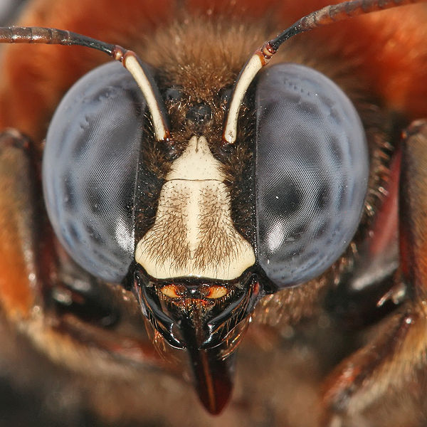
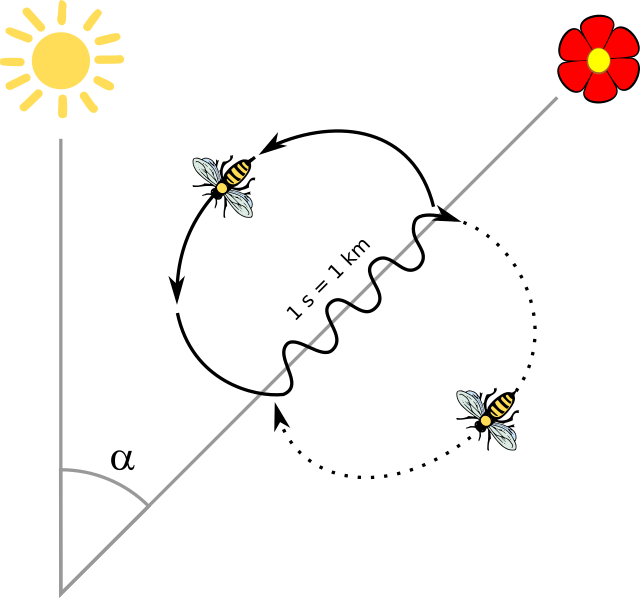

Characteristics
Bees differ from closely related groups such as wasps by having branched or plume-like setae (hairs),
combs on the forelimbs for cleaning their antennae, small anatomical differences in limb structure,
and the venation of the hind wings; and in females, by having the seventh dorsal abdominal plate divided into two half-plates.
-
A pair of large compound eyes which cover much of the surface of the head. Between and above
these are three small simple eyes (ocelli) which provide information on light intensity. -
Eyes
The antennae usually have 13 segments in males and 12 in females, and are geniculate,
having an elbow joint part way along. They house large numbers of sense organs that can detect touch (mechanoreceptors),
smell and taste; and small, hairlike mechanoreceptors that can detect air movement so as to "hear" sounds. - The mouthparts are adapted for both chewing and sucking by having both a pair of mandibles and a long proboscis for sucking up nectar
Keeping a Nectar

Sociality
According to inclusive fitness theory, organisms can gain fitness not just through increasing their own reproductive output,
but also that of close relatives. In evolutionary terms, individuals should help relatives when Cost (Relatedness * Benefit.
The requirements for eusociality are more easily fulfilled by haplodiploid species such as bees because of their unusual relatedness structure.
Navigation, communication, and finding food
The ethologist Karl von Frisch studied navigation in the honey bee. He showed that honey bees communicate by the waggle dance,
in which a worker indicates the location of a food source to other workers in the hive. He demonstrated that bees can recognize
a desired compass direction in three different ways: by the sun, by the polarization pattern of the blue sky, and by the earth's magnetic field.
He showed that the sun is the preferred or main compass; the other mechanisms are used under cloudy skies or inside a dark beehive.
Bees navigate using spatial memory with a "rich, map-like organization
Bee dance
Relationship with humans
Homer'sHymn to Hermes describes three bee-maidens with the power of Divination and thus speaking truth,
and identifies the food of the gods as honey. Sources associated the bee maidens with Apollo and, until the 1980s,
scholars followed Gottfried Hermann (1806) in incorrectly identifying the bee-maidens with the Thriae.
Honey, according to a Greek myth, was discovered by a nymph called Melissa (" Bee" ); and honey was offered to the Greek gods from Mycenean times.
Bees were also associated with the Delphic oracle and the prophetess was sometimes called a bee.
The image of a community of honey bees has been used from ancient to modern times, in Aristotle and Plato;
in Virgil and Seneca; in Erasmus and Shakespeare; Tolstoy, and by political and social theorists such as Bernard Mandeville and
Karl Marx as a model for human society.
In art and literature
Some of the oldest examples of bees in art are rock paintings in Spain which have been dated to 15,000 BC.
W. B. Yeats's poem The Lake Isle of Innisfree (1888) contains the couplet "Nine bean rows will I have there, a hive for the honey bee,
And live alone in the bee loud glade." At the time he was living in Bedford Park in the West of London. Beatrix Potter's illustrated book
The Tale of Mrs Tittlemouse (1910) features Babbity Bumble and her brood (pictured). Kit Williams treasure hunt book The Bee on the Comb (1984)
uses bees and beekeeping as part of its story and puzzle. Sue Monk Kidd's The Secret Life of Bees (2004), and the 2009 film starring Dakota Fanning,
tells the story of a girl who escapes her abusive home and finds her way to live with a family of beekeepers, the Boatwrights.
The humorous 2007
animated film Bee Movie used Jerry Seinfeld's first script and was his first work for children; he starred as a bee named Barry B. Benson, alongside Renée Zellweger. Critics found its premise awkward and its delivery tame. Dave Goulson's A Sting in the Tale (2014) describes his efforts to save bumblebees in Britain,
as well as much about their biology. The playwright Laline Paull's fantasy The Bees (2015) tells the tale of a hive bee named Flora 717 from hatching onwards.